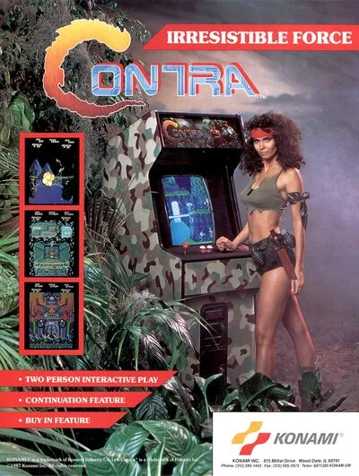

FBA (FinalBurn Alpha)
Contra
- Año: 1987
- Desarrollador: Konami
- Género: Plataformas / Disparos con desplazamiento
- Jugadores: 2 jugadores
En 2631, un meteorito cae en el archipiélago de Galuga, cerca de Nueva Zelanda, y trae consigo un ser alienígena dormido. Dos años después, una organización terrorista llamada Red Falcon toma la isla como parte de su plan para invadir la Tierra. Bill Rizer y Lance Bean, de la unidad Contra, son enviados a la isla de Oceanía para detener la amenaza.
«Contra» es un frenético shoot 'em up de plataformas para uno o dos jugadores con 10 fases. Además de los niveles normales vistos de lado, hay fases de «laberinto 3D» en las que el jugador recorre una serie de pasillos dentro de una base enemiga, destruyendo varios sensores, hasta llegar al núcleo de la base.
El personaje de cada jugador lleva una ametralladora semiautomática con munición ilimitada y puede saltar, moverse y disparar en las ocho direcciones. También se puede mover y saltar mientras se dispara. Coordinar bien los movimientos es fundamental, porque un solo impacto de cualquier enemigo, bala u otro peligro mata al personaje al instante y le quita el arma que llevaba.
Mientras se avanza por niveles llenos de enemigos, se pueden recoger armas adicionales. Al perder una vida también se pierde la mejora de arma que se llevara. Las armas disponibles son: Ametralladora: disparo automático. Arma de dispersión [S]: dispara 5 balas en abanico. Láser: dispara un láser largo que puede acabar con muchos enemigos en fila. Bola de fuego [F]: dispara pequeñas bolas de fuego en espiral. Balas rápidas [R]: aumenta la cadencia del arma que se lleve. Funciona con la ametralladora y la bola de fuego. Barrera [B]: hace invencible al jugador durante unos segundos.
El juego tiene diez fases: Fase 01: Jungla (desplazamiento horizontal) Fase 02: Interior de la base 1 (laberinto 3D) Fase 03: Núcleo de la base 1 (3D fijo) Fase 04: Cascada (desplazamiento vertical) Fase 05: Interior de la base 2 (laberinto 3D) Fase 06: Núcleo de la base 2 (3D fijo) Fase 07: Campo nevado (desplazamiento horizontal) Fase 08: Zona de energía (desplazamiento horizontal) Fase 09: Hangar (desplazamiento horizontal) Fase 10: Guarida alienígena (desplazamiento horizontal)
Controles
Dos botones.
| Panel | Juego |
|---|---|
 | Disparar |
 | Saltar |
  | Empezar |
 | Meter una moneda |
+  | Salir del juego |
El panel en FBA (FinalBurn Alpha)

Longplay

Partida completa de la recreativa (11 min), de World-of-Longplays: Arcade Longplay [209] Contra.